Image Georeferencing¶
Introduction¶
The Image Georeferencing view is used for georeferencing an image using a set of map’s coordinates. A map, with a valid Coordinate Reference System (CRS), is needed to allow to create a set of Graund Control Points (GCP). Each GCP relates a coordinate, on the map, with a mark in the image.
To open the Image Georeferencing view, go to Window ‣ Show View ‣ Imagery... then choose Image Georeferencing.
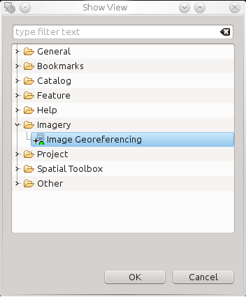
Features¶
The figure shows the Image Georeferencing view integrated in the uDig desktop. This new tool allows you to load an image, specify a set of marks in it and associate the set of coordinates for each one.
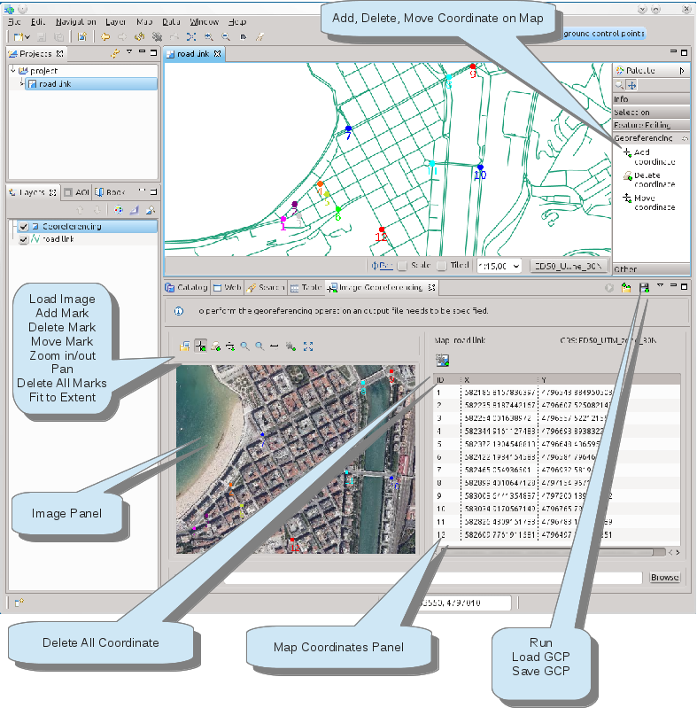
We have the following tools:
| Image Tools | Marker Tools | Coordinate Tools |
|---|---|---|
| Load Image | 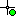 Add Mark | 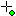 Add Coordinate |
| Zoom In | 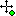 Move Marker | 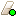 Delete Coordinate |
| Zoom Out | 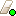 Delete Mark |  Move Coordinate Move Coordinate |
| 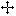 Pan | 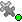 Delete All Marks | |
| Fit to window |
Image Tools¶
The Image Tools allow you to load and navigate on the image. Thus you can search the zone where you want to put the set of mark.
Marker Tools¶
When you find the interested zone of the image, the view offer you a set of tools to draw the marks. Each time you draw a mark, using the Add Mark tool, an empty coordinate will appear in the right panel, the coordinates Panel. Later you should add the coordinate information. You have two options to accomplish this task:
- use the Coordinate Tools;
- edit the coordinate row to set the x,y value.
Coordinate Tools¶
These tools allow you associate a coordinate of CRS to a mark in your image. Thus, when you add a coordinate, using the Add coordinate tool, a point is dawn in the map. Additionally the X, Y value will be displayed in the Coordinates Panel.
Usage¶
This section shows you how to make an image georeferencing operation using uDig.
Step 1¶
Click on the Load Image button to browse the image you would like georeferencing. After that, the tools to manipulate the image will be activated.
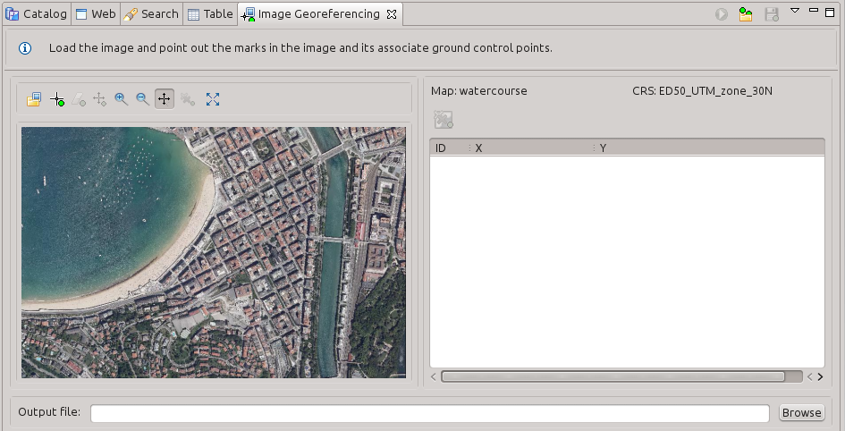
Move around the image using the Pan tool and Zoom In/Out to be accurate while adding marks.
Step 2¶
Add marks to the image, we need at least 6 of them. Select the Add Mark tool and add the first mark.
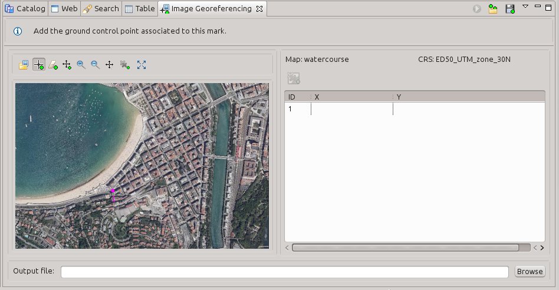
After the first mark is added, the tools that manipulate the ground control points in the map are enabled. These tools are: Add Coordinate, Delete Coordinate, Move Coordinate and Delete All Coordinate.
Step 3¶
Select the tool Add Coordinate. Click on the corresponding place on the map to add a ground control point. After that, it’ll show the coordinates values on the Coordinates Panel.
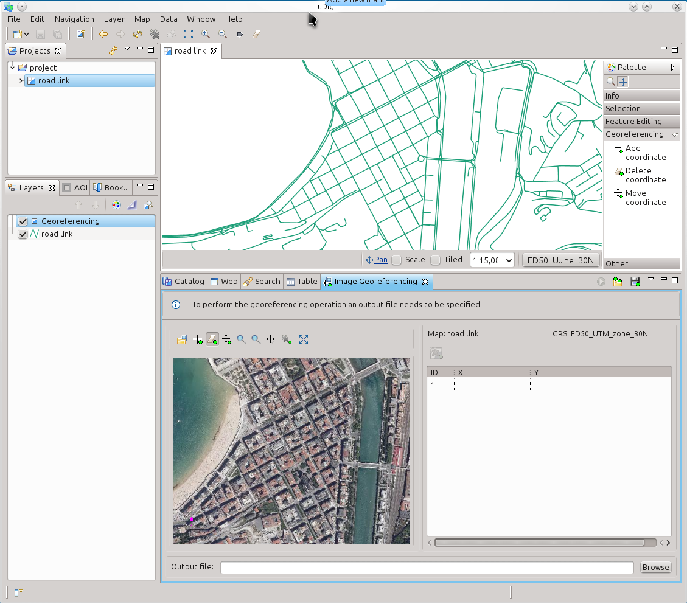
Repeat Step 2 and Step 3 until get the 12 ground control points shown in the following image.
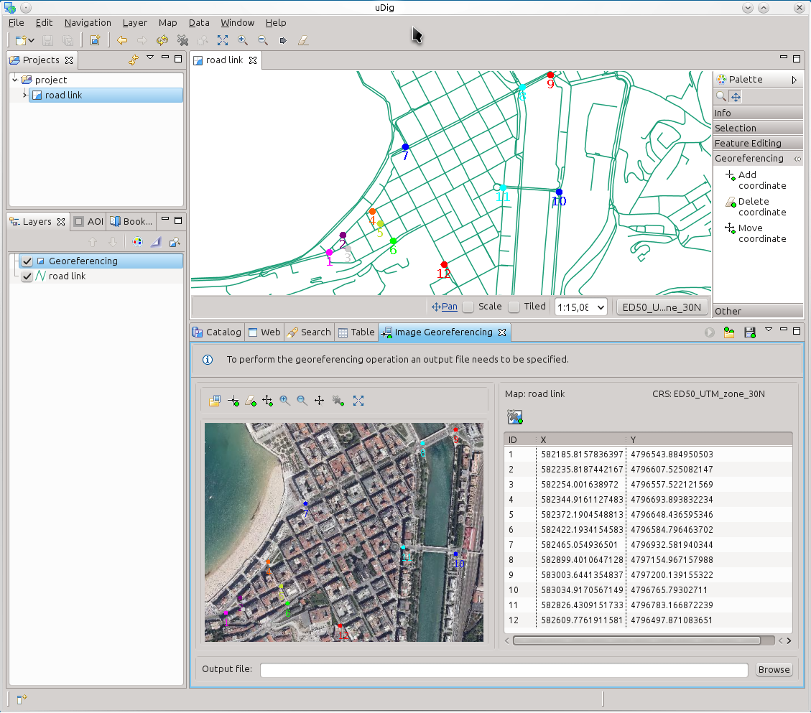
Step 4¶
Only one thing left to be able to perform the georeferencing operation, specify the output file. Click on the Browse button and specify the save file location.
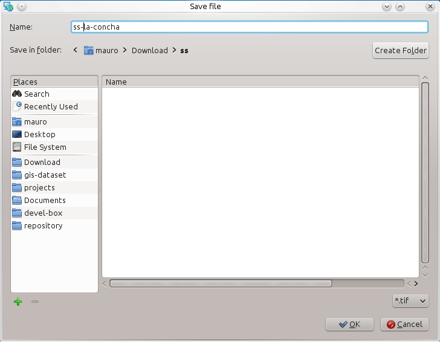
Step 5¶
Now that all the parameters are fulfilled, click on the run button  to perform the Image Georeferencing operation.
to perform the Image Georeferencing operation.
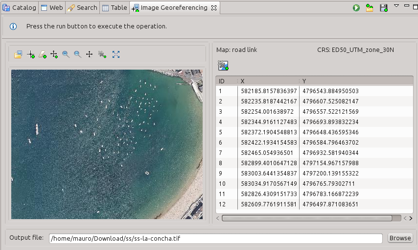
The result of the georeferencing operation is shown in the following figure:
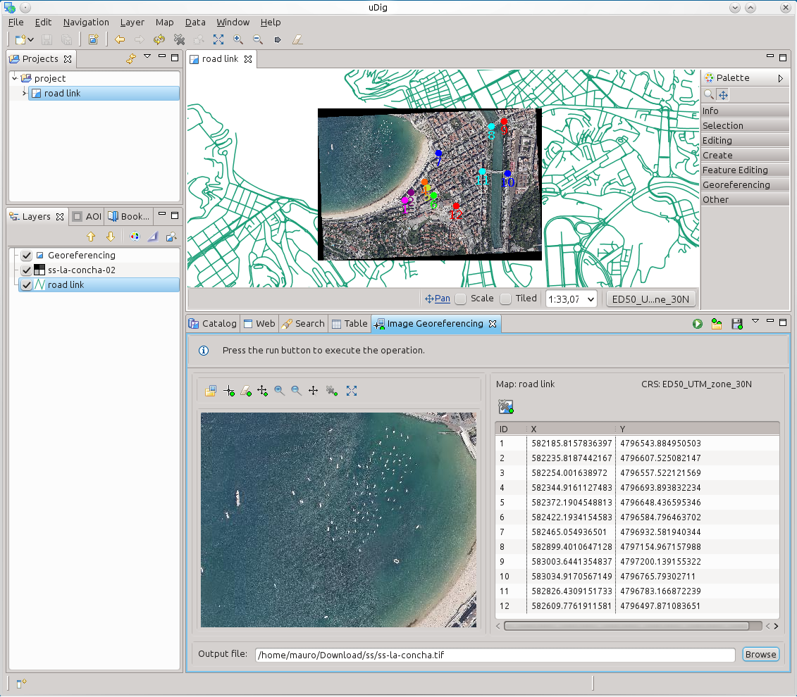
Tips¶
- You can add a GCP directly inserting its coordinate in the Map Coordinate Panel.
- You could save/load your marks and their associated coordinate using the save 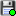 / load 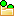 buttons that are available in the view tool bar.
- You could zoom in/out the image using the mouse wheel whenever if you want.